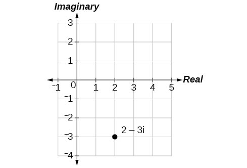
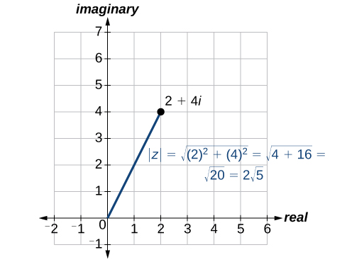
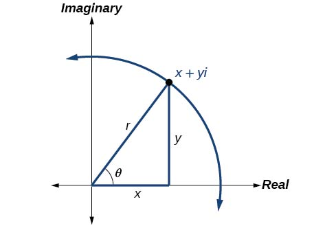
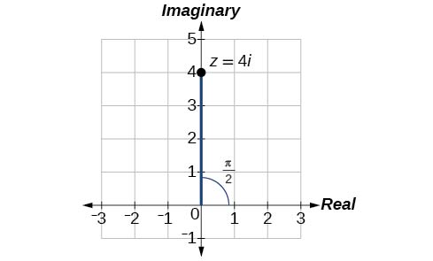
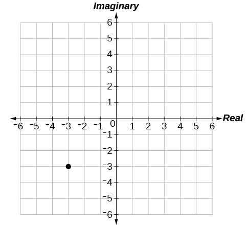
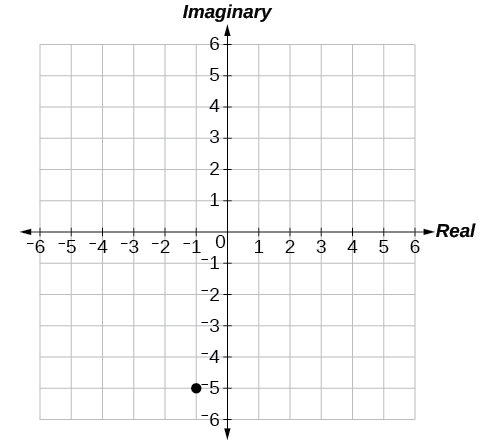
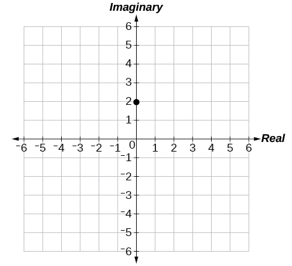
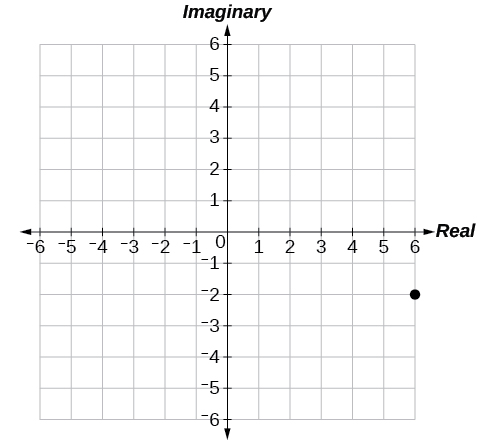
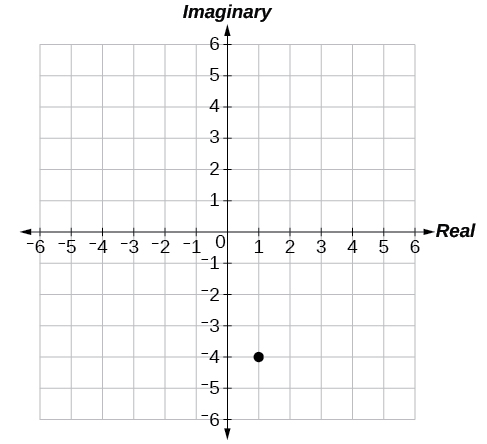

Polar Form of Complex Numbers
“God made the integers; all else is the work of man.” This rather famous quote by nineteenth-century German mathematician Leopold Kronecker sets the stage for this section on the polar form of a complex number. Complex numbers were invented by people and represent over a thousand years of continuous investigation and struggle by mathematicians such as Pythagoras, Descartes, De Moivre, Euler, Gauss, and others. Complex numbers answered questions that for centuries had puzzled the greatest minds in science.
We first encountered complex numbers in Complex Numbers. In this section, we will focus on the mechanics of working with complex numbers: translation of complex numbers from polar form to rectangular form and vice versa, interpretation of complex numbers in the scheme of applications, and application of De Moivre’s Theorem.
Plotting Complex Numbers in the Complex Plane
Plotting a complex number is similar to plotting a real number, except that the horizontal axis represents the real part of the number, and the vertical axis represents the imaginary part of the number,
Plotting a Complex Number in the Complex Plane
Plot the complex number in the complex plane.
Solution
From the origin, move two units in the positive horizontal direction and three units in the negative vertical direction. See Figure 1.

Finding the Absolute Value of a Complex Number
The first step toward working with a complex number in polar form is to find the absolute value. The absolute value of a complex number is the same as its magnitude, or It measures the distance from the origin to a point in the plane. For example, the graph of in Figure 2, shows

Finding the Absolute Value of a Complex Number with a Radical
Find the absolute value of
Solution
Finding the Absolute Value of a Complex Number
Given find
Solution
Writing Complex Numbers in Polar Form
The polar form of a complex number expresses a number in terms of an angle and its distance from the origin Given a complex number in rectangular form expressed as we use the same conversion formulas as we do to write the number in trigonometric form:
We review these relationships in Figure 5.

We use the term modulus to represent the absolute value of a complex number, or the distance from the origin to the point The modulus, then, is the same as the radius in polar form. We use to indicate the angle of direction (just as with polar coordinates). Substituting, we have
Expressing a Complex Number Using Polar Coordinates
Express the complex number using polar coordinates.
Solution
On the complex plane, the number is the same as Writing it in polar form, we have to calculate first.
Next, we look at If and then In polar coordinates, the complex number can be written as or See Figure 6.

Finding the Polar Form of a Complex Number
Find the polar form of
Solution
First, find the value of
Find the angle using the formula:
Thus, the solution is
Converting a Complex Number from Polar to Rectangular Form
Converting a complex number from polar form to rectangular form is a matter of evaluating what is given and using the distributive property. In other words, given first evaluate the trigonometric functions and Then, multiply through by
Converting from Polar to Rectangular Form
Convert the polar form of the given complex number to rectangular form:
Solution
We begin by evaluating the trigonometric expressions.
After substitution, the complex number is
We apply the distributive property:
The rectangular form of the given point in complex form is
Finding the Rectangular Form of a Complex Number
Find the rectangular form of the complex number given and Assume the number is in the first quadrant.
Solution
If and we first confirm We then find and
The rectangular form of the given number in complex form is
Finding Products of Complex Numbers in Polar Form
Now that we can convert complex numbers to polar form we will learn how to perform operations on complex numbers in polar form. For the rest of this section, we will work with formulas developed by French mathematician Abraham De Moivre (1667-1754). These formulas have made working with products, quotients, powers, and roots of complex numbers much simpler than they appear. The rules are based on multiplying the moduli and adding the arguments.
Finding the Product of Two Complex Numbers in Polar Form
Find the product of given and
Solution
Follow the formula
Finding Quotients of Complex Numbers in Polar Form
The quotient of two complex numbers in polar form is the quotient of the two moduli and the difference of the two arguments.
Finding the Quotient of Two Complex Numbers
Find the quotient of and
Solution
Using the formula, we have
Finding Powers of Complex Numbers in Polar Form
Finding powers of complex numbers is greatly simplified using De Moivre’s Theorem. It states that, for a positive integer is found by raising the modulus to the power and multiplying the argument by It is the standard method used in modern mathematics.
Evaluating an Expression Using De Moivre’s Theorem
Evaluate the expression using De Moivre’s Theorem.
Solution
Since De Moivre’s Theorem applies to complex numbers written in polar form, we must first write in polar form. Let us find
Then we find Using the formula gives
Use De Moivre’s Theorem to evaluate the expression.
Finding Roots of Complex Numbers in Polar Form
To find the nth root of a complex number in polar form, we use the Root Theorem or De Moivre’s Theorem and raise the complex number to a power with a rational exponent. There are several ways to represent a formula for finding roots of complex numbers in polar form.
Finding the nth Root of a Complex Number
Evaluate the cube roots of
Solution
We have
There will be three roots: When we have
When we have
When we have
Remember to find the common denominator to simplify fractions in situations like this one. For the angle simplification is
Key Concepts
- Complex numbers in the form are plotted in the complex plane similar to the way rectangular coordinates are plotted in the rectangular plane. Label the x-axis as the real axis and the y-axis as the imaginary axis. See Example 1.
- The absolute value of a complex number is the same as its magnitude. It is the distance from the origin to the point: See Example 2 and Example 3.
- To write complex numbers in polar form, we use the formulas and Then, See Example 4 and Example 5.
- To convert from polar form to rectangular form, first evaluate the trigonometric functions. Then, multiply through by See Example 6 and Example 7.
- To find the product of two complex numbers, multiply the two moduli and add the two angles. Evaluate the trigonometric functions, and multiply using the distributive property. See Example 8.
- To find the quotient of two complex numbers in polar form, find the quotient of the two moduli and the difference of the two angles. See Example 9.
- To find the power of a complex number raise to the power and multiply by See Example 10.
- Finding the roots of a complex number is the same as raising a complex number to a power, but using a rational exponent. See Example 11.
Section Exercises
Verbal
A complex number is Explain each part.
Solution
a is the real part, b is the imaginary part, and
What does the absolute value of a complex number represent?
How is a complex number converted to polar form?
Solution
Polar form converts the real and imaginary part of the complex number in polar form using and
How do we find the product of two complex numbers?
What is De Moivre’s Theorem and what is it used for?
Solution
It is used to simplify polar form when a number has been raised to a power.
Algebraic
For the following exercises, find the absolute value of the given complex number.
Solution
Solution
Solution
For the following exercises, write the complex number in polar form.
Solution
Solution
For the following exercises, convert the complex number from polar to rectangular form.
Solution
Solution
Solution
For the following exercises, find in polar form.
Solution
Solution
Solution
For the following exercises, find in polar form.
Solution
Solution
Solution
For the following exercises, find the powers of each complex number in polar form.
Find when
Solution
Find when
Find when
Solution
Find when
Find when
Solution
Find when
For the following exercises, evaluate each root.
Evaluate the cube root of when
Solution
Evaluate the square root of when
Evaluate the cube root of when
Solution
Evaluate the square root of when
Evaluate the square root of when
Solution
Graphical
For the following exercises, plot the complex number in the complex plane.
Solution

Solution

Solution

Solution

Solution

Technology
For the following exercises, find all answers rounded to the nearest hundredth.
Use the rectangular to polar feature on the graphing calculator to change to polar form.
Use the rectangular to polar feature on the graphing calculator to change to polar form.
Solution
Use the rectangular to polar feature on the graphing calculator to change to polar form.
Use the polar to rectangular feature on the graphing calculator to change to rectangular form.
Solution
Use the polar to rectangular feature on the graphing calculator to change to rectangular form.
Use the polar to rectangular feature on the graphing calculator to change to rectangular form.
Solution